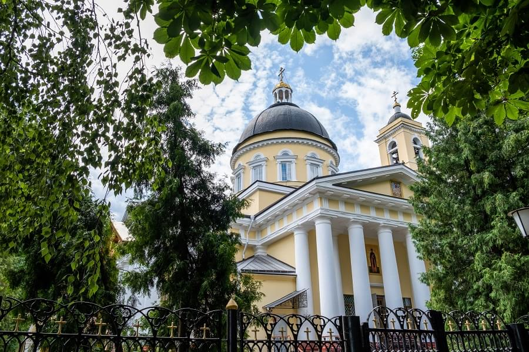
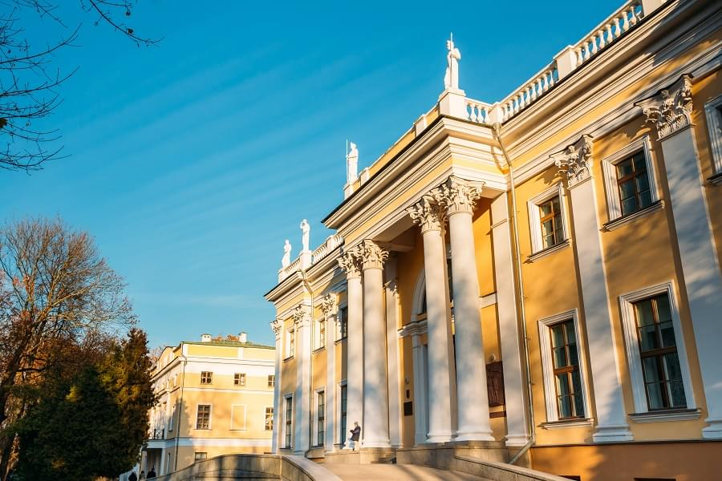
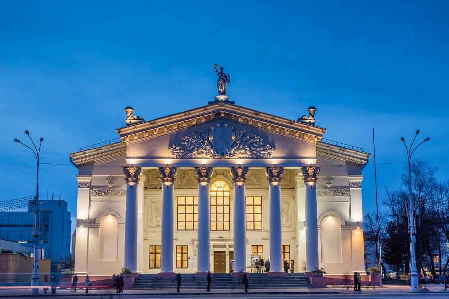

Достопримечательности
Художественная доминанта, главная достопримечательность и любимое место отдыха в Гомеле – дворцово-парковый
ансамбль, возникший вокруг классицистического дворца Румянцевых и Паскевичей. Здание окружает 30-гектарный парк
с редкими деревьями, примыкающий к реке Сож. На его территории находится собор Св. Петра и Павла, 40-метровая
башня со смотровой площадкой, охотничий домик, в котором расположен городской музей, зимний сад и древнее
городище.
Вы сможете не только осмотреть дворец снаружи, но и походить по его богато декорированным залам. В личных
апартаментах князя вы увидите его вещи и оружие.
Часть парка отдана под современные аттракционы. Современную и историческую зоны разделяет узкий Лебяжий пруд,
вытянутый в направлении реки Сож. Его украшает статуя лодочника Гома с питомцем – рысью. Это легендарный
персонаж, который считается основателем Гомеля.
Стоит также уделить внимание городской достопримечательности, не входящей в дворцово-парковый ансамбль, но
располагающейся поблизости – старообрядческой Ильинской церкви, состоящей из трёх срубов и построенной в XVIII
столетии. Это самый старый из белорусских старообрядческих храмов.
Ещё одна интересная достопримечательность – Никольский мужской монастырь, где хранятся ценные для верующих
реликвии.
Во время прогулок по Гомелю у вас будет возможность и пофотографироваться около оригинальных скульптур:
например, у памятника путешественнику, сидящему на чемодане, дворнику, водопроводчику или клоуну Карандашу.
Интересно, что высота скульптуры в точности соответствует росту оригинала – 157 см.
Город также гордится своими многочисленными фонтанами. Вечером их струи подсвечены разноцветным сиянием. Самый
впечатляющий – около здания цирка.
Оригинальная достопримечательность города, появившаяся сравнительно недавно – тематический ресторан «Старое
время», оформленный в стилистике советской эпохи. Персонал там работает в форме НКВД.
Остановившись в Гомеле на несколько дней, удобно совершать экскурсионные набеги на соседние
достопримечательности. Так, в часе езды от Гомеля находится Черкесск со старинной пятибашенной ратушей,
построенной в начале XVI века, где работают «Графский театр» и музей, а наверху расположена смотровая площадка.
Совсем рядом – Бердыж: стоянка древних людей, которые жили тут 26 000 лет назад.
Чуть дальше находятся Хойники – небольшой город с усадьбой Авраамовых и двухэтажным дворцом, где располагается
этнографическая экспозиция.
Любители природы могут также посетить Полесский государственный радиационно-экологический заповедник и
Республиканский биологический заказник Днепро-Сожский: до них удобно добираться из Гомеля.

3 главных музея
Музей истории Гомеля предлагает познакомиться с древнейшими археологическими артефактами, найденными на
территории города, и старинными вещами, которыми пользовались горожане в былые века. В музее воссоздан интерьер
гостиной, столовой и кабинета XIX века: с мебелью, зеркалами, посудой, книгами. Находится музей в
дворцово-парковом комплексе, в летней резиденции хозяев – охотничьем домике.
Музей военной славы повествует о горах Великой Отечественной войны, об обороне города и партизанском движении, о
подвигах и драматических событиях, о жизни Гомельщины в эпоху противостояния захватчикам. Рядом с музеем, под
открытым небом, выстроилась военная техника. Кстати, её можно осмотреть бесплатно, без билета.
Музей печати и фотографии – место, где можно посмотреть на раритетные фотоаппараты, узнать об истории печатного
дела, посмотреть старинные издания и снимки.
Туристический центр
Центральное туристическое место, куда в Гомеле тянутся и путешественник, и горожане – дворцов-парковый комплекс.
Тут гуляют, отдыхают, приобщаются к культуре, устраивают праздники и концерты. Там же, на территории парка,
вдоль реки Сож протянулась красивая набережная – местный променад, по которому приятно совершать продолжительные
прогулки.
Дворец Румянцевых и Паскевичей, Гомель

Развлечения
Отдыхая в Гомеле, вы сможете развеяться в парке аттракционов с Колесом обозрения, пострелять в тире на
территории Музея боевой славы, в летнее время – позагорать и покупаться на пляже, полюбоваться на фонтаны. В
парке и во дворце Румянцевых и Паскевичей регулярно проводятся выставки, концерты и другие культурные
мероприятия. Также можно посетить филармонию, драматический или молодёжный театр, а если вы предпочитаете
современную музыку – отправиться в один из ночных клубов.
Есть в Гомеле и семейные развлекательные центры, детские игровые площадки. А главное, есть цирк – путешествующим
с ребёнком стоит это взять на заметку. Имеется и зоопарк – в агроусадьбе Белладжио. Он невелик, но интересен
туристам, поскольку там можно увидеть символ Белоруссии – живого зубра.
